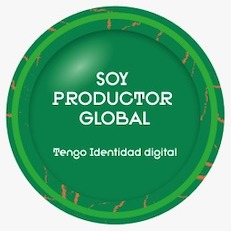
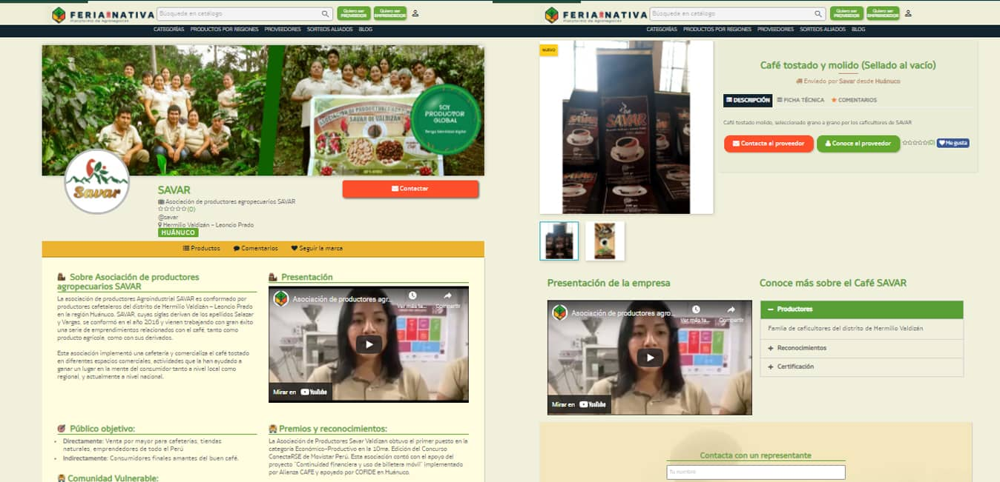

Blog
PRODUCTORES DE CAFÉ DE TINGO MARÍA INICIAN PROCESO DE VENTA A TRAVÉS DE FERIA NATIVA POR SU IDENTIDAD DIGITAL

Gracias a su identidad digital, más de 20 productores de café de Huánuco-Tingo María se
conectaron con la plataforma de agronegocios Feria Nativa, exponiendo sus productos a más de
800 posibles compradores a nivel nacional.
La iniciativa se desarrolla en el marco del convenio desarrollado por Agros y Fundación
Identi, en alianza con la organización internacional Technoserve, que busca convertir a los
productores locales en productores globales conectándolos con la economía digital del mundo.
Las asociaciones que participan son Savar y El Abuelo Valdizano.
Según Robinson López, CEO de Agros, la identidad digital de los productores de café les está
abriendo puertas para conectarlos con compradores socialmente responsables y proveedores de
servicios globales tales como: servicios financieros, seguros agrícolas basados en imágenes
satelitales, comercio electrónico, trámites digitales, telemedicina, entre otros.
Feria Nativa es la primera plataforma de agronegocios que funciona las 24 horas del día los
7 días de la semana, visibilizando al productor que está detrás del producto, humanizando la
marca y generando una conexión directa con los clientes.
En esta primera iniciativa, se comercializarán el Café Tostado Y Molido (Sellado Al Vacío)
de la Asociación
Savar; y, Café
tostado y molido de tipo Exclusivo,
Selecto y Especial de la Asociación El Abuelo
Valdizano.
Cabe resaltar que esta última asociación fue ganadora en la categoría Adultos Imparables del
Desafío Kunan. Este reconocimiento es el reflejo del trabajo de los emprendedores
cafetaleros del distrito de Hermilio Valdizán en Huánuco.
